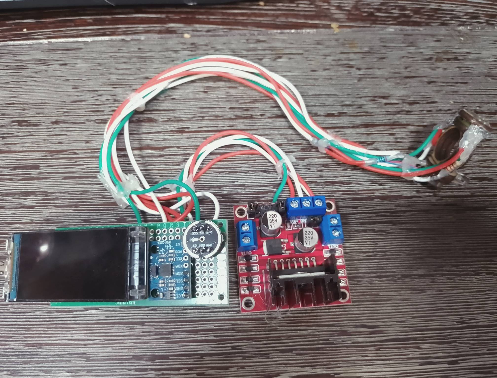

Innovation & Hardware
Introducing Gestolumina (GeLu): Redefining Music Accessibility
Gestolumina (GeLu) stands at the forefront of innovation, revolutionizing the way we interact with music. At its core, GeLu is not just a project – it's a transformative journey towards inclusivity and empowerment.
Our ongoing project involves the development of wearable devices and an interactive light system, providing an immersive experience for the Deaf and Hard of Hearing community. GeLu is not just about technology; it's a community-driven initiative that invites individuals to actively participate in shaping a more inclusive world.